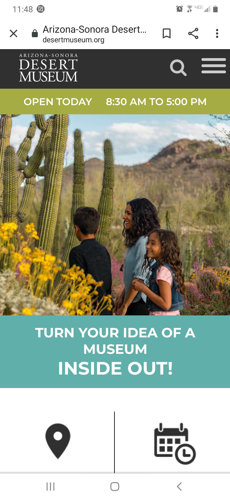
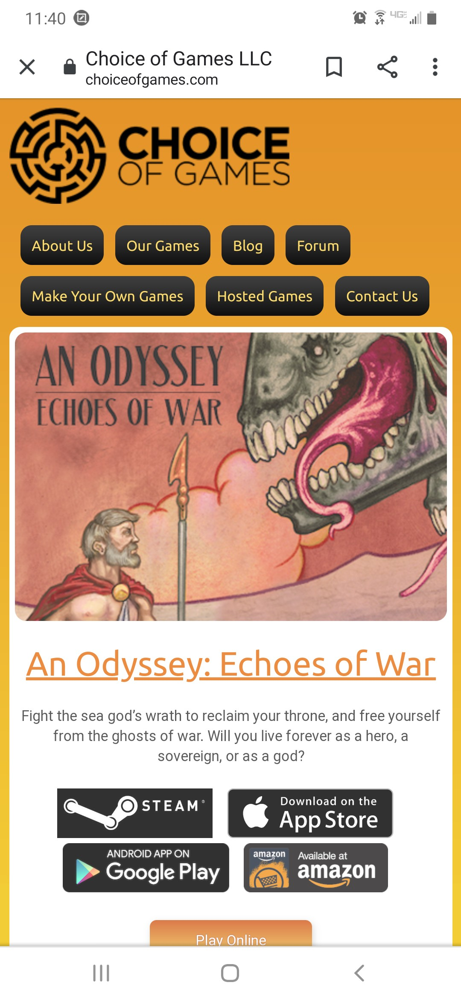

Katrina Matthews
Lesson 02:
Design Principles
White Space & Clean Design

The Desert Museum website has a very clean design. They use blocks of color to organize their information and use simple icons to express many ideas instead of relying on too words. The words they do have are informative and short. The busiest visual on the page is the photo, it has the most going on and the most color. This makes it a focal point, but color is used to tie it back into that rest of the design.
Repetition and Contrast

The Gaslight Theater site is bold with a lot going on. They use repetition to create a theme and contrast to help organize their information. The main use of repetition that the site utilizes is that of color. Deep blues and golden yellows are placed side by side on top of each other. The colors contrast well against each other and when font is place it is a light font on a dark background or a dark font on a light background.
Visual Hierarchy

Visual Hierarch is accomplished in this design by use of size and color. The primary focus when one goes to The Choice of Games site is the newest interactive novels they have on display. This was done by making the cover of the story the largest visual on the screen. A white frame on an orange background also adds contrast that directs the eye towards the cover of the story. The next largest item is the logo for the site. It is bold and easy to read and rests at the top of the screen. Its size and boldness make it the second visual that the eye moves towards. Once the site has gotten the viewers attention with its stories and has stated who they are they assume that the viewer is staying round long enough to want to view more of their website, so the third focus is the small navigation buttons listed under the logo.